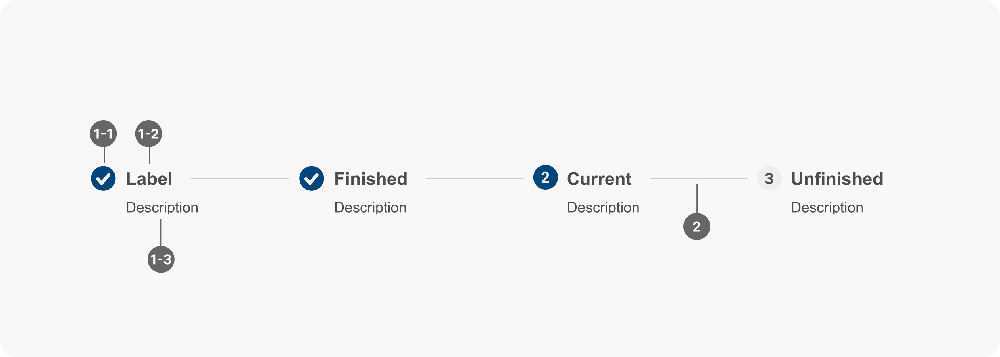

Steppers 步驟條
概述
步驟條是一種引導使用者完成多步驟流程的元件，以直線方式呈現流程的各個步驟，並指示當前步驟和整體進度。
使用時機
步驟條常用於以下情境：
- 多步驟流程：任何需要使用者按順序完成多個步驟的任務，例如註冊、結帳、預約等。
- 複雜任務：將複雜的任務分解為多個小步驟，降低使用者的認知負擔。
- 需要進度回饋：當使用者需要了解任務的進度時，使用步驟條可以提供清晰的視覺化回饋。
使用規範
當您取用步驟條進行設計時，應考慮以下原則：
- 步驟標題：每個步驟應有簡潔明瞭的標題，准確描述該步驟的內容。
- 說明文字 (選擇性)：在標題下方提供簡短的說明，解釋該步驟的目的或需要完成的任務。
- 進度指示：步驟條上應清楚區分不同步驟的狀態。
- 線性/非線性：根據流程的特性，選擇線性或非線性步驟條。
- 線性步驟條：使用者必須按照順序完成步驟，不能跳過或返回。
- 非線性步驟條：使用者可以自由跳轉到任何步驟。
- 互動回饋：提供明確的視覺回饋，讓使用者知道當前步驟、已完成步驟和可跳轉的步驟。
設計範例

- 步驟 (Step)：每個步驟包含以下元素：
- 圖示 (Icon) (選擇性)：表示步驟狀態的圖示。
- 完成 (Finished)：已完成的步驟。
- 當前 (Current)：使用者目前所在的步驟。
- 未完成 (Unfinished)：尚未開始或正在進行的步驟。
- 標題 (Title)：描述步驟內容的文字。
- 描述 (Description) (選擇性)：提供更詳細的步驟說明。
- 連接線 (Connector)：連接相鄰步驟的線條，表示步驟之間的關係。